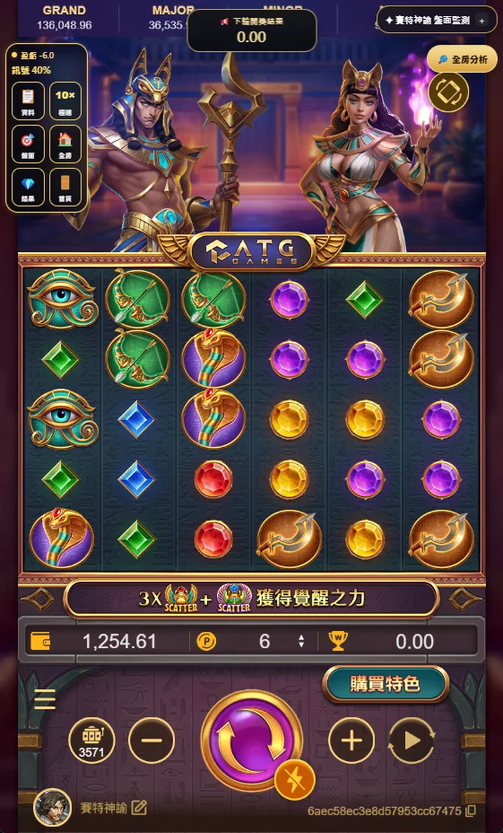
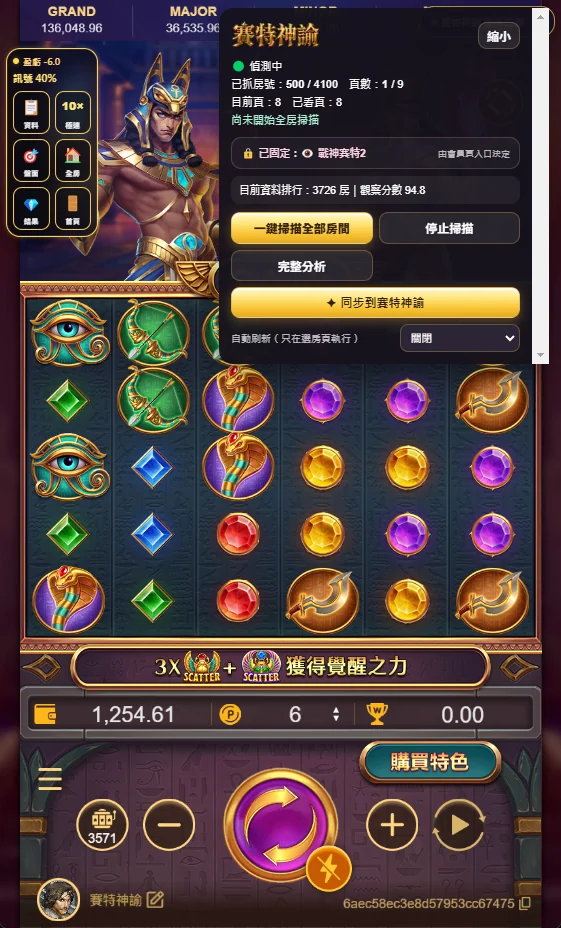

賽特神諭功能教學 · 極速加速


以上為賽特神諭實際介面截圖，畫面可能隨版本及裝置不同而調整。點擊圖片可放大查看。
功能目的
將支援遊戲的加速操作集中在同一個入口，減少反覆操作的步驟。
使用方式
在遊戲與助手正常運作時開啟加速功能，依畫面提供的控制操作；實際效果會受遊戲版本、裝置與當前狀態影響。
使用前要注意
請先確認目前遊戲是否已啟用自動轉動，以及當前的投注與速度設定，避免誤觸。
加速沒有反應？
先關閉加速操作並確認遊戲仍正常運作，再重新開啟；不要假設加速一定會自動停止或改變遊戲結果。
提醒：功能可用性依遊戲、裝置及當前版本而異；觀察與統計資訊不保證任何遊戲結果或獲利。